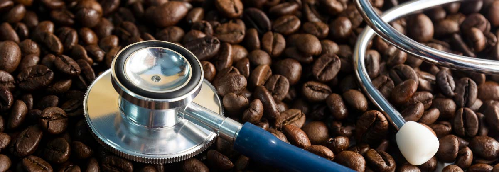

Para comenzar
El café y el té están entre las bebidas que más se consumen en todo el mundo y contienen cantidades importantes de cafeína, lo que hace que la cafeína sea la agente psicoactivo que más se ingiere en muchos países. Una variedad importantes de plantas contienen cafeína en sus semillas, frutos y hojas. Además del café y el té, algunas plantas como los granos de cacao, las hojas de yerba mate y las bayas de guaraná, contienen también cafeína.
La cafeína también puede sintetizarse y se añade a alimentos y bebidas, entre ellos refrescos y bebidas energéticas o tomarse en forma de pastillas. Además, la cafeína se utiliza ampliamente como tratamiento de la apnea de la prematuridad.
El consumo de cafeína de forma global
El café y el té se han consumido durante muchos años y se han convertido en una parte importante de las tradiciones culturales y la vida social, debido a que son bebidas para aumentar la vigilia y la productividad del trabajo. El contenido de cafeína es más alto en el café, las bebidas energéticas y las pastillas de cafeína; el té presenta un contenido intermedio y los refrescos un contenido bajo.
En los Estados Unidos, el 85% de los adultos consumen cafeína a diario y la media de consumo de cafeína es de 135 mg por día, lo que equivale a una taza y media de café. El café es la fuente predominante de cafeína ingerida por los adultos, mientras que los refrescos y el té son las fuentes más importantes de cafeína que consumen los adolescentes.
Café, cafeína y enfermedades crónicas
Desde hace numerosas décadas existe la preocupación de que el café y la cafeína pudieran incrementar el riesgo de cáncer y de enfermedades cardiovasculares (ECV). Sin embargo, recientemente, ha crecido la evidencia de los beneficios para la salud del consumo de café.
Una cuestión clave en la investigación sobre la cafeína, el café y la salud, es que el café contiene cientos de fitoquímicos biológicamente activos, incluidos los polifenoles como el ácido clorogénico y los lignanos, el alcaloide trigonelina, las melanoidinas que se forman durante el proceso de tostado y cantidades significativas de magnesio, potasio y niacina. Estos compuestos del café pueden reducir el estrés oxidativo, mejorar la composición del microbioma intestinal y modular el metabolismo de la glucosa y de los lípidos. En cambio, el diterpeno cafestol, presente en el café sin filtrar, aumenta el colesterol sérico. Los resultados de las investigaciones sobre el café y otras fuentes de alimentos que contienen cafeína deben interpretarse con cautela, ya que los efectos podrían no deberse a la cafeína en sí misma.
Algunas consideraciones para tener en cuenta
El consumo de café con cafeína puede presentar efectos adversos cuando las dosis son demasiado elevadas y en colectivos especiales. Los límites de consumo de cafeína se sitúan en 400 mg de cafeína por día en el caso de los adultos y de 200 mg por día para las mujeres embarazadas y lactantes. La gran mayoría de los adultos en Estados Unidos se adhieren a estas recomendaciones, pero debido a la variación del metabolismo de cada persona y la sensibilidad específica a la cafeína, una cantidad mayor o menor podrían ser apropiada en casos específicos.
Conclusión
Numerosa evidencia científica sugiere que el consumo de café con cafeína no aumenta el riesgo de enfermedades cardiovasculares ni de cáncer. El consumo de 3 a 5 tazas de café diarias se ha asociado de forma consistente con una reducción del riesgo de varias enfermedades crónicas. La evidencia científica actual no justifica la recomendación de un consumo determinado de cafeína o de café para la prevención de enfermedades, pero sugiere que en adultos (mujeres que no están embarazadas ni lactando y no tienen condiciones de salud específicas), un consumo moderado de café o té puede formar parte de un estilo de vida saludable.
